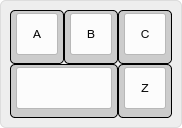
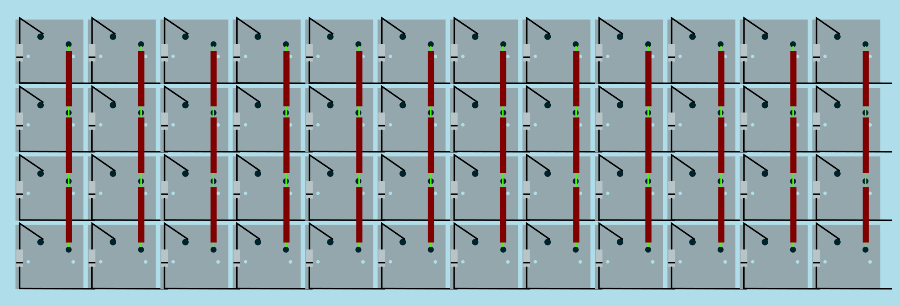
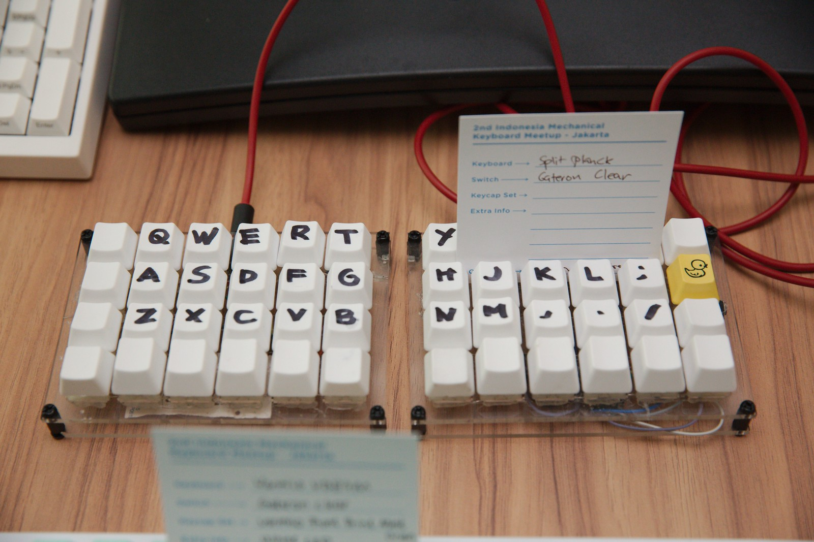
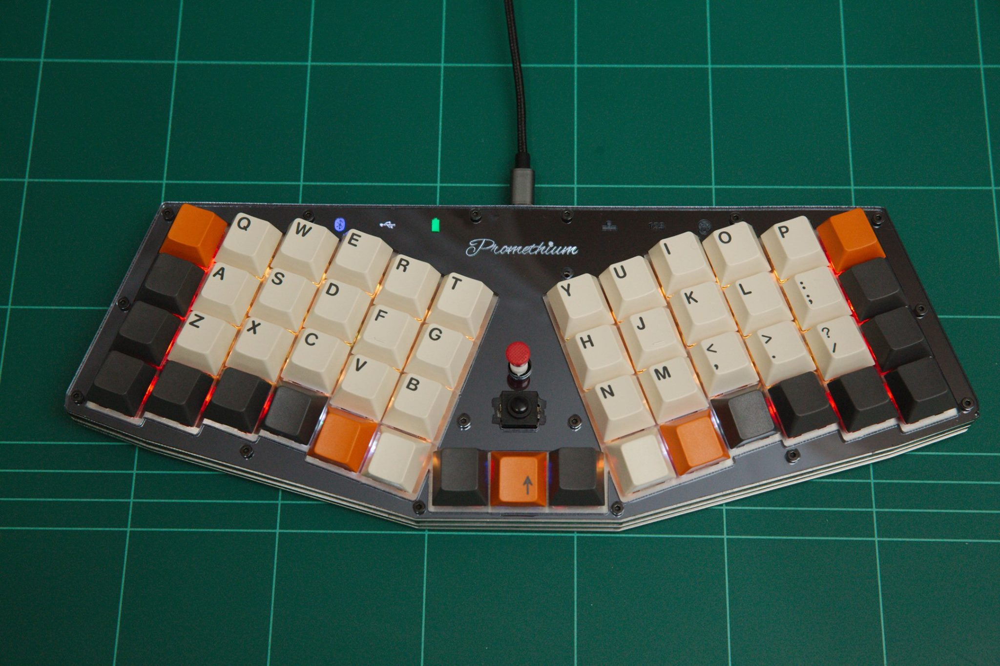
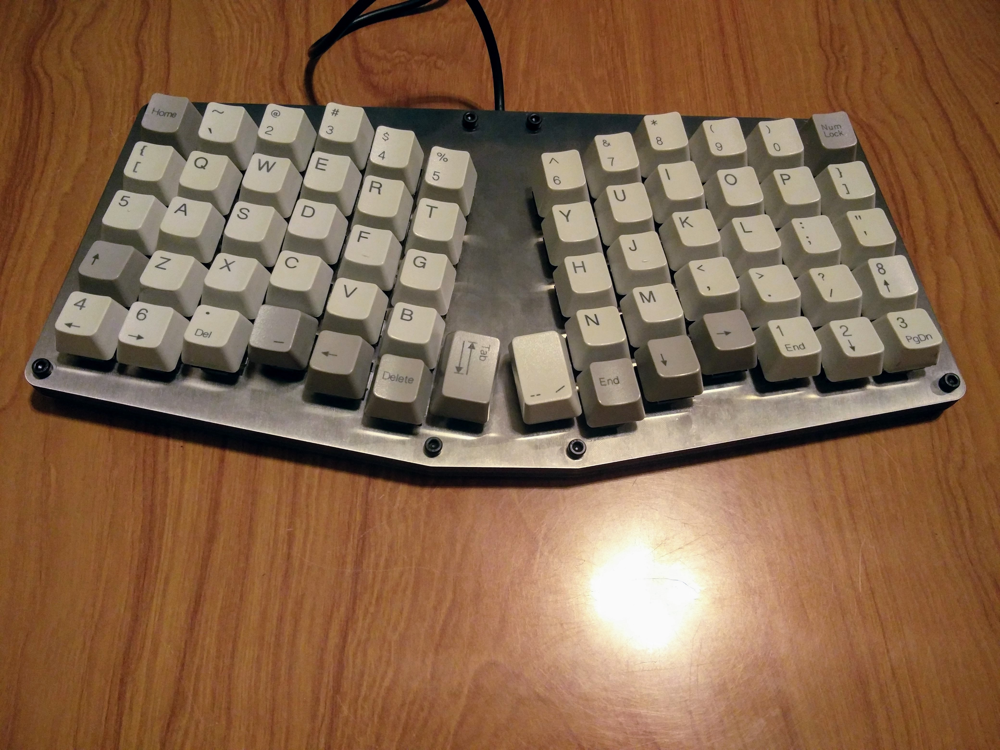

Building Your Own
⌨ Keyboard
Indonesia Mechanical Keyboard Meetup
8 April 2017 - Dattabot Dojo, Senopati, Jakarta
by Priyadi Iman Nurcahyo -
priyadi@keyboard.id -
keyboard.id
Don't Be Intimidated!
It is not a 🚀 Rocket Science
- Automatically generated design using tools provided by mechanical keyboard community.
- Sandwich case. Simple, easy to understand 2D design.
- Laser cut components. No expensive and complicated molding or machining.
- No designing by hand required.
- No programming required.
Required Tools
- Soldering Iron.
- (optional) Multimeter.
- (optional) Solder sucker.
- Screwdriver.
Components: Plate and Case Materials
-
Material for switch plate
metal plate, 1.5mm thickness, common materials are stainless steel or aluminum alloy
-
Material for case
most common material is acrylic
Tips: Ask your laser-cutting workshop first, they might be able to provide the material for you.
Components: Controller Board
An Atmel AVR controller board with hardware USB is a safe choice, it is:
- common
- well-supported
- powerful enough for a keyboard
- practically unbrickable
The most popular controller chip is the ATMega32u4.
Components: Controller Board, cont.
- Teensy 2.0. Very popular but not that common in Indonesia. Recommended for beginners.
- Teensy++. Similar to Teensy 2.0 but with more pins for larger keyboards.
- Pro Micro. Cheap and plentiful in Indonesia.
- Adafruit Feather Bluefruit LE 32u4. Supports battery and Bluetooth.
Other Components
- Switches and keycaps *
- 1N4148 diodes
- Cables
- Soldering tin
- Screws
* Our procedure supports both Cherry MX and ALPS compatible switches.
The "KLE Raw Data"
KLE can output "KLE Raw Data", a partial JSON metadata which is the community standard to describe any keyboard layout.

→
[{a:7},"A","B","C"],
[{w:2},"","Z"]
Step 2: Get Your CAD Files
- Copy 'Raw data' of your layout from KLE
- Paste into Swill's Plate & Case Builder (builder.swillkb.com)
- You will get SVG, DXF or EPS files.
- Send the files to your favorite laser-cutting workshop (i.e. LaserIndonesia.com) to get your switch plate and case.
Tips On Laser Cutting
- Get materials from the laser cutting shop if possible.
- Pay attention to kerf compensation value. Ask your laser cutting shop the correct value, or use 0.15mm.
- You can use your favorite vector graphics editor (i.e. Inkscape or Adobe Illustrator) to fine tune your results.
Step 3: Assemble the Hardware
- Install and solder your switches in matrix arrangement
- Connect each rows and columns to a pin on the controller
- In most cases, any pins other than Vcc, GND, and RST are OK
- Don't forget to take note which row/column connected to which pin
Matrix Arrangement

Example of standard matrix arrangement for the QMK firmware (COL2ROW setting)
Image courtesy of RoastPotatoes.co
Step 4: Generate Your Firmware
- Copy 'Raw data' of your layout from KLE
- Go to QMK Firmware Builder (qmk.sized.io) and paste your layout raw data.
- Define your wiring, pin assignment and your desired keymap
- Get your .hex file
- Flash your controller using the resulting .hex file
QMK Firmware
Advanced users can download the source files and make further customizations using the QMK Firmware.
http://qmk.fm
Some examples of features not available from the generator: leader key, mousekeys, Unicode output, audio output, Bluetooth, Trackpoint, and more!
Step 5: There's no Step 5
That wasn't too hard, right? 😅
Showcase: Let's Split

By Raihan Saputra. Dual piece split Planck based keyboard. Uses two Pro Micros, one on each piece, connected to each other by a two wire cable.
Showcase: Promethium

By Priyadi. Single piece split Planck based keyboard. Adafruit Feather 32u4 controller. USB & Bluetooth. Trackpoint for mouse control. Per switch RGB LED.
Showcase: Atreus 64

By Derek Schmell. An Atreus with extra rows and columns. Pro Micro controller. Matias quiet switches. All stainless steel plate and housing.
Showcase: [your keyboard here]
You know what? We could use more keyboards to showcase here 😅
More Keyboard Building Stuff...
The End
PS. Don't forget to document your build process and publish it.